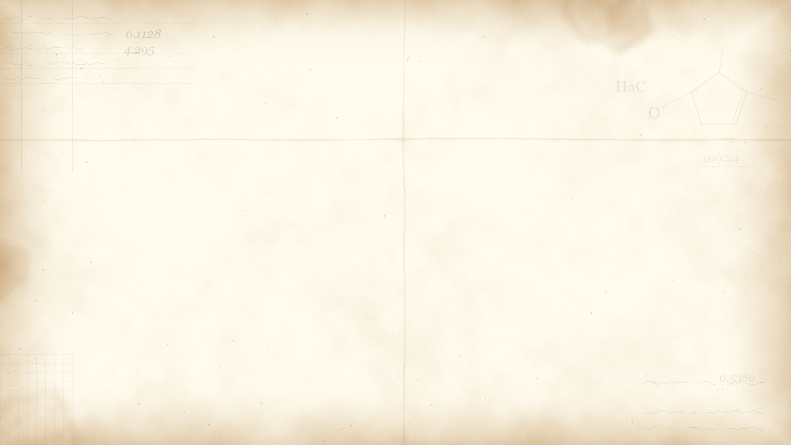
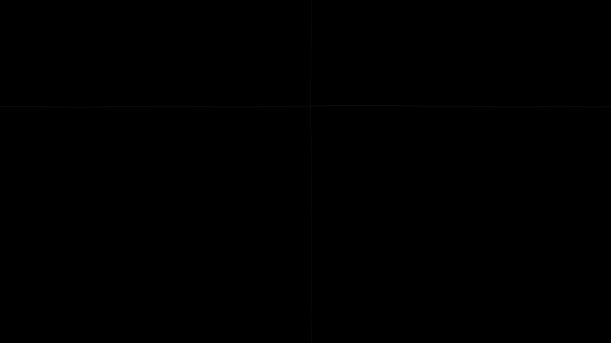
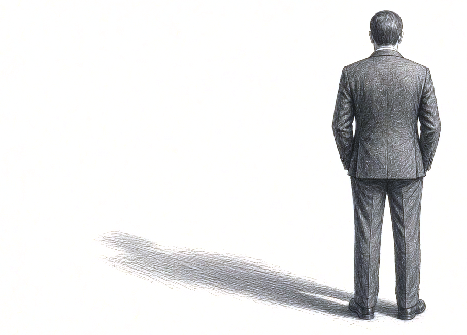
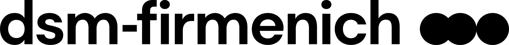

Data and AI in Sustainable Digital
Transformation
From Brasília to the Plant Floor
Eduardo Sopalda
D&T · Global Data Governance Lead

PEOPLE | PLANET | PROGRESS
AUTOMA CHEM 2026 · ESTREL BERLIN · 26 OCTOBER 2026 · 9:40